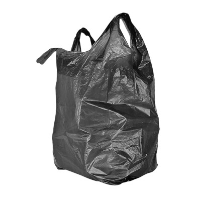

비닐류 분리수거 안내

비닐류 OTHER
#과자봉지 #라면봉지
재활용: 가능
분류: 비닐류
분리배출 표시: 비닐류 other
분리배출 방법
- 기름기, 음식물 등이 남아있지 않게 깨끗이 씻어서 비닐류로 분리배출해주세요.
- 이물질을 깨끗이 제거하기 어려우면 그냥 일반쓰레기(종량제봉투)로 버려주세요.
유의할 점
- 비닐류 OTHER는 2가지 이상의 재질을 혼합하여 만든 복합 플라스틱 재질이기 때문에 단일 재질로 만든 비닐류와 달리 물질 재활용이 불가능합니다.
- 그래서 다른 제품으로 재생산되지 않고, 대부분 에너지 재활용(소각을 통한 열에너지 생산) 자원으로 활용됩니다.
- 비닐에 남아있는 음식물, 기름기 등이 다른 비닐까지 오염시켜서 함께 재활용되지 못하는 경우가 많으니 반드시 세척해서 배출해주세요.